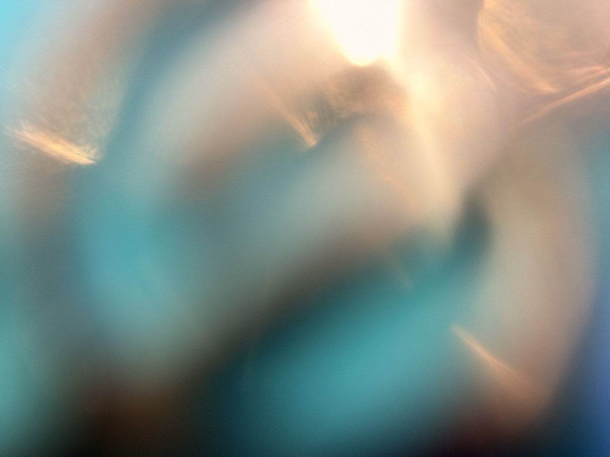

시즌 1 여름 감각 다이빙 · 이번 호의 감각 — 이름 없는 감각
힘을 빼면 가라앉을 줄 알았는데,
힘을 빼야 뜨더라고요.
"힘 빼세요." 수영을 배우면 제일 많이 듣는 말이지요. 그런데 참 이상해요. 힘을 빼라는 말을 듣고 힘이 빠지는 사람은 없거든요. 빼야지, 빼야지, 하는 동안 어깨는 더 올라가 있고요.
그러다 어느 순간, 정말 어쩌다 한 순간. 물이 몸을 받쳐줍니다. 등 밑이 넓어지는 것 같고, 몸무게가 어디론가 가버려요. 귀가 물에 잠기면 세상이 한 뼘 멀어지고요. 그 낯선 가벼움을 뭐라고 불러야 할까요. 사전에는 부력이라고 적혀 있지만, 그 단어에는 그 기분이 안 들어 있습니다.
잘하려고 하면 가라앉아요
물에 뜨는 데는 자격이 필요 없어요. 애쓴다고 더 띄워주는 것도 아니고요. 오히려 반대지요. 몸을 맡기면, 물이 받쳐줍니다.
저도 꽤 오래 애쓰는 자세로 살았던 것 같아요. 어깨에 힘을 주고, 턱을 당기고, 가라앉지 않으려고요. 물이 아니라, 하루하루에서요. 그래서 그 말이 그렇게 어려웠나 봐요. 힘을 빼 본 적이, 별로 없었던 거지요.
잠시 덮여 있었을 뿐
이번 여름, 여섯 번의 편지를 보냈습니다. 초록을 보고, 물에 손을 담그고, 빗소리를 끝까지 듣고, 첫 입을 눈 감고 먹고, 그늘과 볕의 경계를 밟고, 오늘은 물 위에 누웠어요. 생각해 보면 전부 힘 빼는 연습이었네요. 혼자 한 일도 아니었고요. 편지 너머에서 같이 눈을 감고, 같이 손을 담가 주신 분들이 계셨으니까요.
하면서 알게 된 게 하나 있어요. 감각이 무뎌졌다는 건 고장 났다는 뜻이 아니더라고요. 잠시 덮여 있었을 뿐이에요. 바쁜 날들이 그 위에 쌓여서요. 그리고 덮인 것은, 걷을 수 있습니다. 걷어 보니 초록은 그 자리에 있더라고요. 감촉도, 소리도, 맛도, 온도도요. 돌아와도 됩니다. 언제든지요.
— 올리한나 드림

이번 호의 감각 처방 · 이름 없는 감각
오늘 밤, 몸무게를 전부 맡겨봅니다
욕조가 있다면 물에 누워 귀까지 잠겨 보세요. 없다면 침대에서요. 눕고 나서 딱 5분만, 몸 어디에 아직 힘이 남아 있는지 찾아보세요. 어깨인지, 턱인지, 손인지. 찾았으면 그쪽 무게를 슬며시 놓아주세요. 내가 눕는 게 아니라, 침대가 나를 들고 있다고 생각해 보는 거예요.
물 위에 누워본 적 있나요?
힘을 빼도 괜찮았습니다.
여섯 번의 편지로, 덮여 있던 감각들을 함께 깨웠습니다. 이 편지들이 당신의 여름에 작은 틈을 냈기를, 그 틈으로 계절이 조금 스며들었기를 바랍니다. 다음 시즌, 새로운 감각으로 다시 편지할게요. 그때까지 틈틈이, 안녕히.
시즌 2는 새로운 감각으로 찾아옵니다.
아직 구독 전이시라면, 다음 시즌 첫 편지부터 받아보실 수 있어요.